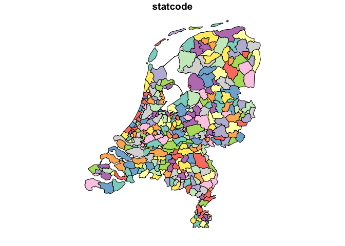
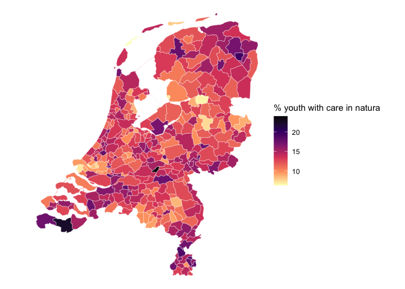

Cartographic map material from Statistics Netherlands/CBS
Edwin de Jonge
2024-04-24
Source:vignettes/maps.Rmd
maps.RmdStatistics Netherlands (CBS) is the office that produces all official statistics of the Netherlands.
Besides statistical data, SN also publishes cartographic maps, i.e. administrative areas such as “gemeenten” (municipalities), “buurten” (neighborhoods), “wijken” (districts) and many more. The main outlet for publishing these CBS specific geospatial data is via Publieke Diensten op de Kaart (PDOK), which offers a wide range of geospatial API’s for accessing map material using Geographical Information System software.
A simple use case for using maps is thematic cartography: turning regional statistical data into thematic cartographic map. For this purpose the map with the boundaries of administrative regions, which typically has a precision of meters is turned into a picture in which a pixel is (several) 100 meters by 100 meters: the map has more precision than that is needed for a cartographic picture for the Netherlands. The website https://cartomap.github.io/nl/ therefore offers simplified, and thus smaller , maps of the CBS map material, that are useful for making plots of the Netherlands.
cbsodataR allows easy access to these maps using the
following functions:
-
cbs_get_maps, returns a data.frame with all available simplified maps. -
cbs_get_sf, returns a geospatialsfobject that can be used for plotting. -
cbs_join_sf_with_data, returns a geospatialsfobject combined with the data downloaded withcbs_get_data.
R offers a range of specialized packages for plotting data on maps
such as ggplot2, tmap, leaflet,
mapview and others, and these are to be used when plotting
maps. For this example we stick to ggplot2 to keep things
simple and refer the user to the help of the other packages.
Available maps
cbsodataR gives an easy way to retrieve cartographic
maps that can be used with data that is downloaded with
cbsodataR.
To see a list of available maps use, the function
cbs_get_maps()
library(cbsodataR)
cbs_maps <- cbs_get_maps()
# the layout of the data.frame is:
str(cbs_maps)## 'data.frame': 589 obs. of 4 variables:
## $ region: chr "arbeidsmarktregio" "arbeidsmarktregio" "arbeidsmarktregio" "arbeidsmarktregio" ...
## $ year : int 2014 2015 2016 2017 2018 2019 2020 2021 2022 2023 ...
## $ wgs84 : chr "https://cartomap.github.io/nl/wgs84/arbeidsmarktregio_2014.geojson" "https://cartomap.github.io/nl/wgs84/arbeidsmarktregio_2015.geojson" "https://cartomap.github.io/nl/wgs84/arbeidsmarktregio_2016.geojson" "https://cartomap.github.io/nl/wgs84/arbeidsmarktregio_2017.geojson" ...
## $ rd : chr "https://cartomap.github.io/nl/rd/arbeidsmarktregio_2014.geojson" "https://cartomap.github.io/nl/rd/arbeidsmarktregio_2015.geojson" "https://cartomap.github.io/nl/rd/arbeidsmarktregio_2016.geojson" "https://cartomap.github.io/nl/rd/arbeidsmarktregio_2017.geojson" ...with:
-
$region: the type of region -
$year: the year in which this region map is valid, regional classifications change yearly in NL… -
$wgs84: link to geojson with wgs84 projection (epsg:4326). -
$rd: link to geojson with rijksdriehoeksstelsel projection (epsg:28992).
At the moment of generating this document, the following regions are available:
arbeidsmarktregio, arrondissementsgebied, brandweerregio, buurt, coropgebied, coropplusgebied, coropsubgebied, gemeente, ggdregio, grootstedelijke_agglomeratie, jeugdregio, kamervankoophandelregio, landbouwgebied, landbouwgroep, landsdeel, nuts1, nuts2, nuts3, politieregio, provincie, regionaalmeld_coordinatiepunt, regionale_eenheid, regionale_energiestrategie, regioplus_arbeidsmarktregio, ressort, rpagebied, stadsgewest, subres_regio, toeristengebied, toeristengroep, veiligheidsregio, veiligthuisregio, wijk, zorgkantoorregio
Map retrieval: cbs_get_sf
To download a map, without any data, the function
cbs_get_sf can be used.
## Linking to GEOS 3.11.0, GDAL 3.5.3, PROJ 9.1.0; sf_use_s2() is TRUE
gemeente_2023 <- cbs_get_sf("gemeente", 2023)gemeente_2023 is a map file with the boundaries of the
Dutch municipalities of 2023. Note that is just contains the codes
($statcode) and names ($statnaam) of the
municipalities. The names are useful for displaying purposes and the
codes are useful for joining/connecting the map with data on
municipalities in 2023.
str(gemeente_2023) # sf object## sf [342 × 3] (S3: sf/tbl_df/tbl/data.frame)
## $ statcode: chr [1:342] "GM0014" "GM0034" "GM0037" "GM0047" ...
## $ statnaam: chr [1:342] "Groningen" "Almere" "Stadskanaal" "Veendam" ...
## $ geometry:sfc_MULTIPOLYGON of length 342; first list element: List of 1
## ..$ :List of 1
## .. ..$ : num [1:38, 1:2] 247394 242500 243821 243243 243246 ...
## ..- attr(*, "class")= chr [1:3] "XY" "MULTIPOLYGON" "sfg"
## - attr(*, "sf_column")= chr "geometry"
## - attr(*, "agr")= Factor w/ 3 levels "constant","aggregate",..: NA NA
## ..- attr(*, "names")= chr [1:2] "statcode" "statnaam"
plot(gemeente_2023, max.plot = 1) # just plot the statcode kolom.
Creating a map with data: cbs_join_sf_with_data
cbsodataR contains a utility function
cbs_join_sf_with_data that allows for creating a map object
with the data you downloaded from Statistics Netherlands/CBS.
Suppose we have downloaded the following dataset:
youth_care_data <- cbs_get_data( "85098NED" # youth care table
, Perioden="2022JJ00" # only figures of 2022
, RegioS=has_substring("GM") # only "gemeente" figures
) Since we have data on municipalities (“gemeente”) in 2022, we can create a map object containing the downloaded data for the “gemeente”s in 2022
map_with_data <-
cbs_join_sf_with_data("gemeente", 2022, youth_care_data) |>
transform( natura = JongerenMetJeugdhulpInNatura_1 )
print(map_with_data)## Simple feature collection with 345 features and 10 fields
## Geometry type: MULTIPOLYGON
## Dimension: XY
## Bounding box: xmin: 13565 ymin: 306960 xmax: 277529 ymax: 619172
## Projected CRS: Amersfoort / RD New
## First 10 features:
## statcode statnaam RegioS Perioden JongerenMetJeugdhulpInNatura_1
## 1 GM0014 Groningen GM0014 2022JJ00 15.4
## 2 GM0034 Almere GM0034 2022JJ00 12.9
## 3 GM0037 Stadskanaal GM0037 2022JJ00 14.7
## 4 GM0047 Veendam GM0047 2022JJ00 19.6
## 5 GM0050 Zeewolde GM0050 2022JJ00 16.9
## 6 GM0059 Achtkarspelen GM0059 2022JJ00 13.0
## 7 GM0060 Ameland GM0060 2022JJ00 7.9
## 8 GM0072 Harlingen GM0072 2022JJ00 13.0
## 9 GM0074 Heerenveen GM0074 2022JJ00 12.9
## 10 GM0080 Leeuwarden GM0080 2022JJ00 17.6
## JongerenMetJeugdhMetVerblInNat_2 JongerenMetJeugdbescherming_3
## 1 9.5 1.4
## 2 7.9 1.3
## 3 17.1 2.4
## 4 15.9 2.9
## 5 10.5 1.8
## 6 9.7 1.3
## 7 NA NA
## 8 16.0 1.7
## 9 9.3 1.3
## 10 10.6 2.0
## JeugdbeschEnJeugdhMetVerblInNat_4 JongerenMetJeugdreclassering_5 natura
## 1 46.1 0.4 15.4
## 2 41.7 0.5 12.9
## 3 59.4 0.3 14.7
## 4 56.3 NA 19.6
## 5 51.8 0.4 16.9
## 6 49.4 NA 13.0
## 7 NA NA 7.9
## 8 46.0 NA 13.0
## 9 37.2 0.2 12.9
## 10 50.5 0.4 17.6
## geometry
## 1 MULTIPOLYGON (((247394 5893...
## 2 MULTIPOLYGON (((152521 4902...
## 3 MULTIPOLYGON (((264125 5662...
## 4 MULTIPOLYGON (((260432 5704...
## 5 MULTIPOLYGON (((168735 4915...
## 6 MULTIPOLYGON (((211391 5859...
## 7 MULTIPOLYGON (((177842 6084...
## 8 MULTIPOLYGON (((160686 5733...
## 9 MULTIPOLYGON (((191212 5658...
## 10 MULTIPOLYGON (((185116 5876...And this map can be plotted e.g. with ggplot2
library(sf)
library(ggplot2)
map_with_data |>
ggplot() +
geom_sf(aes(fill=natura), color="#FFFFFF99") +
scale_fill_viridis_c(direction = -1)+
labs(fill="% youth with care in natura") +
theme_void()
Manual process
cbs_join_sf_with_data is handy, but if you want more
control on the process, or want to combine your own map material, the
following steps can be taken.
library(dplyr) # not necessary, but familiar for tidyverse code
# retrieve map
gemeente_2022 <- cbs_get_sf(region="gemeente", year="2022")
# add a statcode column to the dataset so it can be joined to the map.
youth_care_data <- youth_care_data |>
cbs_add_statcode_column() |>
mutate(natura = JongerenMetJeugdhulpInNatura_1)
# the map is left joined with the data (so the result is again an sf object)
gemeente_2022 |>
left_join(youth_care_data, by="statcode") |>
ggplot() +
geom_sf(aes(fill=natura), color="#FFFFFF99") +
scale_fill_viridis_c(direction = -1, option = "A")+
labs(fill="% youth with care in natura") +
theme_void()